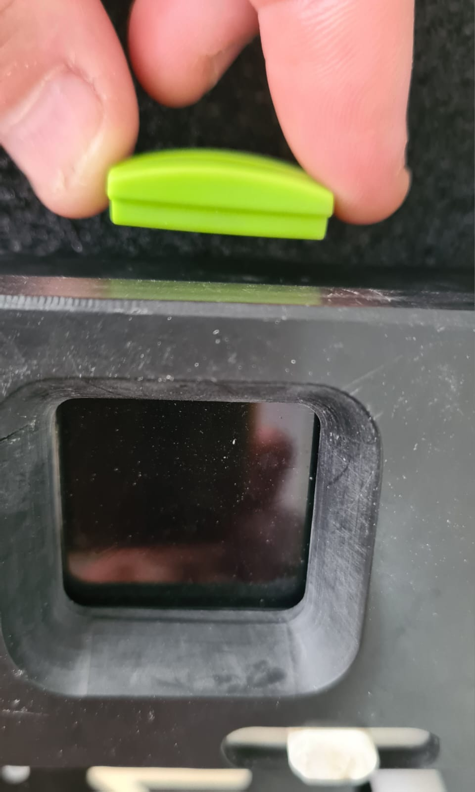

Force Rebooting: You can force the device to reboot by applying a small magnet on the back side of the device at the level of the display. This will turn the device off.

Wheel jamming: This is of course always a possibility with old/dirty line and the main contributing factor will be the lack or little tension of that line. If you notice the wheel is not spinning first check if the line has enough tension and if possible, adding an extra wrap on a tie off to increase the tension often solves the problem. Otherwise, a way of unblocking the wheel is to hold the line in a hand, increase the tension and then swiftly roll back and forth the mnemo to clean the wheel, that should do the trick probably in 90% of the cases. Of course, after that you’ll have to resurvey that shot.
Obstacles on the line :It is important to know that the device measures distance whether you move it forward or backward. This is done intentionally. In case you have an obstacle on the line (thick knot, arrow etc .. ) , roll the mnemo all the way to the obstacle, then back the length of the obstacle plus the size of the Mnemo. Unclip it from the line (do not stop the survey or add a station) and clip it on again after the obstacle. Resume rolling the device until you reached the next station. Like this there is no loss of time to rearrange the line.
Compensation for thick tie wraps: You can compensate the loss in measurement of the round part of a large tie wrap by rolling back the device the estimated distance that is missing.
Display or not display :We recommend all user of Mnemo to get familiar enough with the device to use only the colors of the screen and not read the menu at each station. This will increase the smoothness of the process and allows them to focus on stabilizing and clipping on and off the device.
Opening the pressure plate (gate): If you have difficulty manipulating the pressure plate, brute force won’T help, simply hold the lever between thumb and index, apply a rotational force forward and THEN pull backward.
Organizing work, multiple sections: I personally call all my section AA1 or use BASIC mode. In most cases I can remember what I survey and in which order. In more complex scenario you can either take the time to change the name of the section or write on a slate complementary information.